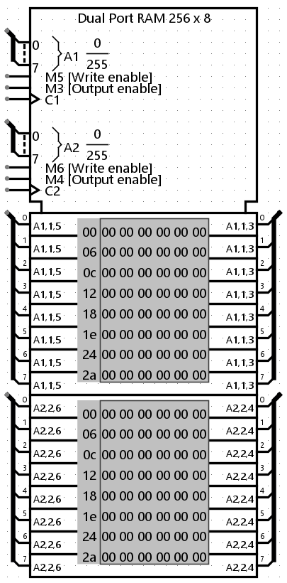
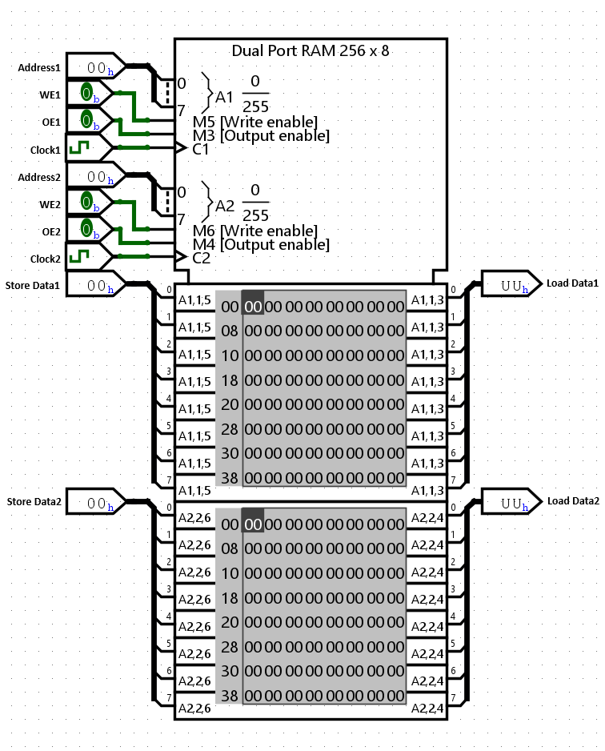
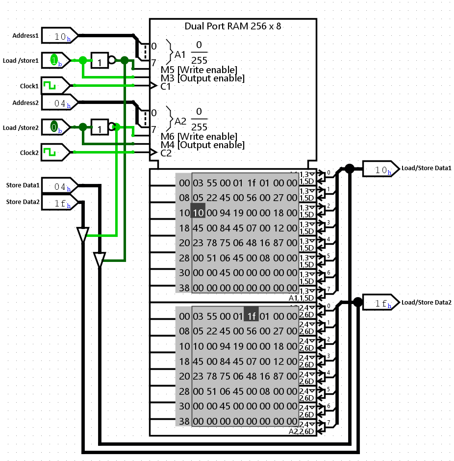

Dual Port RAM
| Library: | Memory |
| Introduced: | --- |
| Appearance: |  |
Behavior
The Dual Port RAM component is an advanced variation of the standard RAM, capable of storing up to 16,777,216 values (specified in the Address Bit Width attribute), each of which can include up to 32 bits (specified in the Data Bit Width attribute).
Its defining feature is the inclusion of two fully independent access ports (Port A and Port B). This architecture allows two separate circuits to read from or write to the memory simultaneously.
Current values are displayed in the component. Addresses are listed in gray to the left of the display area. A key feature is Independent View Control: users can scroll through Port A's view and Port B's view separately to monitor different memory regions.
The component supports different interfaces, depending on the Data Interface attribute.
- Separate Data Bus (Default)
-
For each port (A and B), separate pins are provided for input (Din) and output (Dout). This option removes the necessity of dealing with Controlled Buffers and is easier to use for most dual-port applications.
 - Bidirectional Data Bus
-
For each port, a single shared pin is used for both loading and storing data. This mimics real-world memory chips but typically requires a Controlled Buffer component to manage data direction, similar to the standard RAM wiring illustrated below.
 -
Pins
Since this is a Dual Port RAM, most pins are duplicated for Port 1 and Port 2.
- A1, A2 on west edge (input, bit width matches Address Bit Width)
- Selects which of the values in memory is currently being accessed by Port 1 and Port 2 respectively.
- D1, D2 on west edge (input, bit width matches Data Bit Width)
- The data input pins. Present if "Separate Data Bus" is selected. When a store is requested, the value at this port is stored into memory.
- D1, D2 on east edge (input/output or output, bit width matches Data Bit Width)
- The data output pins. If ld is 1, the component emits the value at the current address. If "Bidirectional Data Bus" is selected, these pins also act as inputs for writing.
- str1, str2 on south edge (input, bit width 1)
- Store (Write Enable): When 1 or floating, a clock pulse will result in storing the data into memory at the currently selected address for the respective port.
- ld1, ld2 on south edge (input, bit width 1)
- Load (Output Enable): Selects whether the RAM should emit (on D) the value at the current address. If 0, the output is high-impedance.
- C1, C2 on south edge (input, bit width 1)
- Clock inputs: Trigger the write operations. Writes usually happen on the rising edge.
- clr on south edge (input, bit width 1)
- Clear: (Optional) When this is 1, all values in memory are pinned to 0 immediately.
Attributes
When the component is selected or being added, the digits '0' through '9' alter its
Address Bit Width
attribute and Alt-0 through Alt-9 alter itsData Bit Width
attribute.- Address Bit Width
- The bit width of the address bits. The number of values stored in RAM is 2addrBitWidth.
- Data Bit Width
- The bit width of each individual value in memory.
- Data Interface
- Configures whether to use Separate Data Buses (separate input/output pins) or Bidirectional Data Buses (shared pins).
- Byte Enables
- (Available when Data Bit Width >= 9). If enabled, adds extra input pins to control writing to specific bytes within a word.
- Clear Pin
- If enabled, adds an asynchronous Clear pin to reset memory contents.
Poke Tool Behavior
See poking memory in the User's Guide. Clicking on a value within the component allows you to edit it. The tool intelligently detects whether you are clicking on Port A's view (top) or Port B's view (bottom).
Text Tool Behavior
None.
Menu Tool Behavior
See pop-up menus and files in the User's Guide.